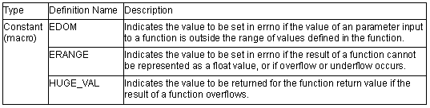
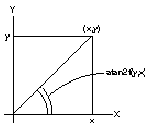

<mathf.h>
Performs various mathematical operations.
<mathf.h> declares mathematical functions and defines macros in single-precision format. The mathematical functions and macros used here are does not follow the ANSI specifications. Each function receives a float-type parameter and returns a float-type value.
The following constants (macros) are all implementation-defined.

Operation in the event of an error is described below.
1. Domain error
A domain error occurs if the value of a parameter input to a function is outside the domain over which the mathematical function is defined. In this case, the value of EDOM is set in errno. The function return value depends on the compiler; see the user's manual for details.
2. Range error
A range error occurs if the result of a function cannot be represented as a float value. In this case, the value of ERANGE is set in errno. If the result overflows, the function returns the value of HUGE_VAL, with the same sign as the correct value of the function. If the result underflows, 0 is returned as the return value.
Note
(1) If there is a possibility of a domain error resulting from a <mathf.h> function call, it is dangerous to use the resultant value directly. The value of errno should always be checked before using the result in such cases.
Example:
.
.
.
1 x=asinf(a);
2 if (errno==EDOM)
3 printf ("error\n");
4 else
5 printf ("result is : %f\n", x);
.
.
.
In line 1, the arc sine value is found using the asinf function. If the value of parameter a is outside the domain of the asinf function [–1.0, 1.0], the EDOM value is set in errno. Line 2 determines whether a domain error has occurred. If a domain error has occurred, error is output in line 3. If there is no domain error, the arc sine value is output in line 5.
(2) Whether or not a range error occurs depends on the floating-point number internal representation format determined by the compiler. For example, if an internal representation format that allows infinity to be represented as a value is used, <mathf.h> library functions can be implemented without causing range errors.
float acosf(float f)
Description: Computes the arc cosine of a floating-point number.
Header file: <mathf.h>
Return values: Normal: Arc cosine of f
Abnormal: In case of domain error: Returns not-a-number.
Parameters: f Floating-point number for which arc cosine is to be found
Example: #include <mathf.h>
float f, ret;
ret=acosf(f);
Error conditions:
A domain error occurs for a value of f not in the range [–1.0, +1.0].
Remarks: The acosf function returns the arc cosine in the range [0, p] radians.
float asinf(float f)
Description: Computes the arc sine of a floating-point number.
Header file: <mathf.h>
Return values: Normal: Arc sine of f
Abnormal: In case of domain error: Returns not-a-number.
Parameters: f Floating-point number for which arc sine is to be found
Example: #include <mathf.h>
float f, ret;
ret=asinf(f);
Error conditions:
A domain error occurs for a value of f not in the range [–1.0, +1.0].
Remarks: The asinf function returns the arc sine in the range [–p/2, +p/2] radians.
float atanf(float f)
Description: Computes the arc tangent of a floating-point number.
Header file: <mathf.h>
Return values: Arc tangent of f
Parameters: f Floating-point number for which arc tangent is to be found
Example: #include <mathf.h>
float f, ret;
ret=atanf(f);
Remarks: The atanf function returns the arc tangent in the range (–p/2, +p/2) radians.
float atan2f(float y, float x)
Description: Computes the arc tangent of the result of division between two floating-point numbers.
Header file: <mathf.h>
Return values: Normal: Arc tangent value when y is divided by xAbnormal: In case of domain error: Returns not-a-number.
Parameters: x Divisor
y Dividend
Example: #include <mathf.h>
float x, y, ret;
ret=atan2f(y, x);
Error conditions: A domain error occurs if the values of both x and y are 0.0.
Remarks: The atan2f function returns the arc tangent in the range (–p, +p] radians. The meaning of the atan2f function is illustrated in figure 10.6. As shown in the figure, the result of the atan2f function is the angle between a straight line passing through the origin and point (x, y), and the X-axis.
If y = 0.0 and x is negative, the result is p. If x = 0.0, the result is ±p/2, depending on whether y is positive or negative.

Figure Meaning of atan2f Function
float cosf(float f)
Description: Computes the cosine of a floating-point radian value.
Header file: <mathf.h>
Return values: Cosine of f
Parameters: f Radian value for which cosine is to be found
Example: #include <mathf.h>
float f, ret;
ret=cosf(f);
float sinf(float f)
Description: Computes the sine of a floating-point radian value.
Header file: <mathf.h>
Return values: Sine of f
Parameters: f Radian value for which sine is to be found
Example: #include <mathf.h>
float f, ret;
ret=sinf(f);
float tanf(float f)
Description: Computes the tangent of a floating-point radian value.
Header file: <mathf.h>
Return values: Tangent of f
Parameters: f Radian value for which tangent is to be found
Example: #include <mathf.h>
float f, ret;
ret=tanf(f);
float coshf(float f)
Description: Computes the hyperbolic cosine of a floating-point number.
Header file: <mathf.h>
Return values: Hyperbolic cosine of f
Parameters: f Floating-point number for which hyperbolic cosine is to be found
Example: #include <mathf.h>
float f, ret;
ret=coshf(f);
float sinhf(float f)
Description: Computes the hyperbolic sine of a floating-point number.
Header file: <mathf.h>
Return values: Hyperbolic sine of f
Parameters: f Floating-point number for which hyperbolic sine is to be found
Example: #include <mathf.h>
float f, ret;
ret=sinhf(f);
float tanhf(float f)
Description: Computes the hyperbolic tangent of a floating-point number.
Header file: <mathf.h>
Return values: Hyperbolic tangent of f
Parameters: f Floating-point number for which hyperbolic tangent is to be found
Example: #include <mathf.h>
float f, ret;
ret=tanhf(f);
float expf(float f)
Description: Computes the exponential function of a floating-point number.
Header file: <mathf.h>
Return values: Exponential value of f
Parameters: f Floating-point number for which exponential function is to be found
Example: #include <mathf.h>
float f, ret;
ret=expf(f);
float frexpf(float value, float ret)
Description: Breaks a floating-point number into a [0.5, 1.0] value and a power of 2.
Header file: <mathf.h>
Return values: If value is 0.0: 0.0If value is not 0.0: Value of ret defined by ret * 2*e = value
Parameters: value Floating-point number to be broken into a [0.5, 1.0) value and a power of 2e Pointer to storage area that holds power-of-2 value
Example: #include <mathf.h>
float ret, value;
int *e
ret=frexpf(value, e);
Remarks: The frexpf function breaks value into a [0.5, 1.0) value and a power of 2. Itstores the resultant power-of-2 value in the area pointed to by e.
The frexp function returns the return value ret in the range [0.5, 1.0] or as 0.0.
If value is 0.0, the contents of the int storage area pointed to by e and the value of ret are both 0.0.
float ldexpf (float ret, int f)
Description: Multiplies a floating-point number by a power of 2.
Header file: <mathf.h>
Return values: Result of e * 2f operation
Parameters: e Floating-point number to be multiplied by a power of 2f Power-of-2 value
Example: #include <mathf.h>
float ret, e;
int f;
ret=idexpf(e, f);
float logf(float f)
Description: Computes the natural logarithm of a floating-point number.
Header file: <mathf.h>
Return values: Normal: Natural logarithm of f
Abnormal: In case of domain error: Returns not-a-number.
Parameters: f Floating-point number for which natural logarithm is to be found
Example: #include <mathf.h>
float f, ret;
ret=logf(f);
Error conditions:A domain error occurs if f is negative.
A range error occurs if f is 0.0.
float log10f(float f)
Description: Computes the base-ten logarithm of a floating-point number.
Header file: <mathf.h>
Return values: Normal: Base-ten logarithm of f
Abnormal: In case of domain error: Returns not-a-number.
Parameters: f Floating-point number for which base-ten logarithm is to be found
Example: #include <mathf.h>
float f, ret;
ret=log10f(f);
Error conditions:A domain error occurs if f is negative.
A range error occurs if f is 0.0.
float modff(float a, float *b)
Description: Breaks a floating-point number into integral and fractional parts.
Header file: <mathf.h>
Return values: Fractional part of a
Parameters: a Floating-point number to be broken into integral and fractional parts
b Pointer indicating storage area that stores integral part
Example: #include <mathf.h>
float a, *b, ret;
ret=modff(a, b);
float powf(float x, float y)
Description: Computes a floating-point number raised to a power.
Header file: <mathf.h>
Return values: Normal: Value of x raised to the power y
Abnormal: In case of domain error: Returns not-a-number.
Parameters: x Value to be raised to a powery Power value
Example: #include <mathf.h>
float x, y, ret;
ret=powf(x, y);
Error conditions:
A domain error occurs if x is 0.0 and y is 0.0 or less, or when x is negative and y is not an integer.
float sqrtf(float f)
Description: Computes the nonnegative square root of a floating-point number.
Header file: <mathf.h>
Return values: Normal: Nonnegative square root of f
Abnormal: In case of domain error: Returns not-a-number.
Parameters: f Floating-point number for which nonnegative square root is to be found
Example: #include <mathf.h>
float f, ret;
ret=sqrtf(x, y);
Error conditions:A domain error occurs if f is negative.
float ceilf(float f)
Description: Returns the smallest integral value not less than the given floating-point number.
Header file: <mathf.h>
Return values: Smallest integral value not less than f
Parameters: f Floating-point number for which smallest integral value not less than that number is to be found
Example: #include <mathf.h>
float f, ret;
ret=ceilf(f);
Remarks: The ceilf function returns the smallest integral value not less than f, expressed as a float. Therefore, if f is negative, the value after truncation of the fractional part is returned.
float fabsf(float f)
Description: Computes the absolute value of a floating-point number.
Header file: <mathf.h>
Return values: Absolute value of f
Parameters: f Floating-point number for which absolute value is to be found
Example: #include <mathf.h>
float f, ret;
ret=fabsf(f);
float floorf(float f)
Description: Returns the largest integral value not greater than the given floating-point number.
Header file: <mathf.h>
Return values: Largest integral value not greater than f
Parameters: f Floating-point number for which largest integral value not greater than that number is to be found
Example: #include <mathf.h>
float f, ret;
ret=floorf(f);
Remarks: The floor function returns the largest integral value not greater than f, expressed as a float. Therefore, if f is negative, the value after rounding-up of the fractional part is returned.
float fmodf(float x, float y)
Description: Computes the floating-point remainder of division of two floating-point numbers.
Header file: <mathf.h>
Return values: When y is 0.0: xWhen y is not 0.0: Remainder of division of x by y
Parameters: x Dividend
y Divisor
Example: #include <mathf.h>
float x, y, ret;
ret=fmodf(x, y);
Remarks: In the fmodf function, the relationship between parameters x and y and return value ret is as follows:
x = y * i + ret (where i is an integer)
The sign of return value ret is the same as the sign of x.
If the quotient of x/y cannot be expressed, the value of the result is undefined.